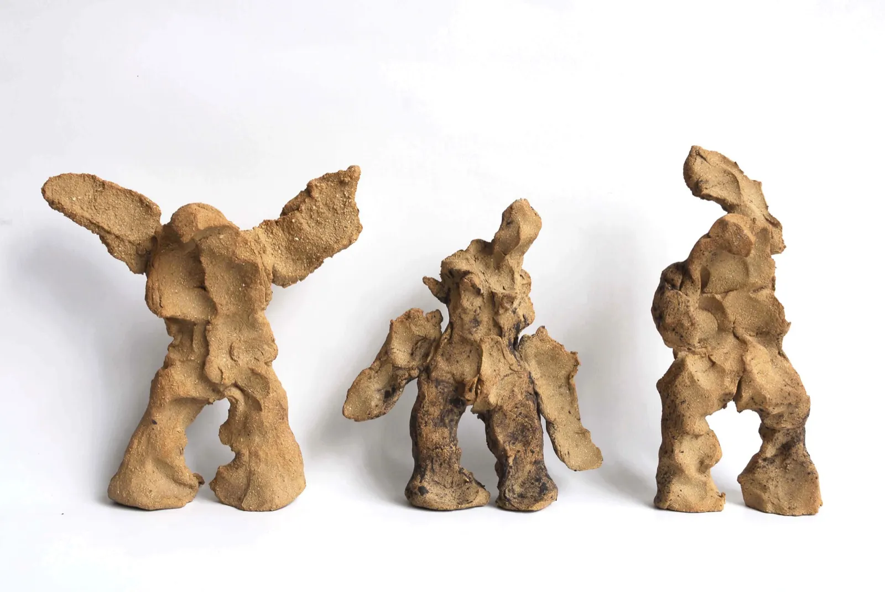
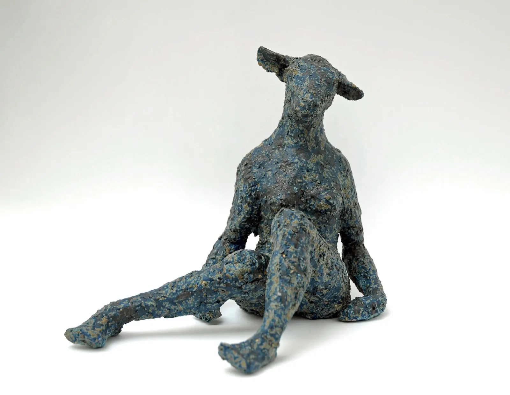
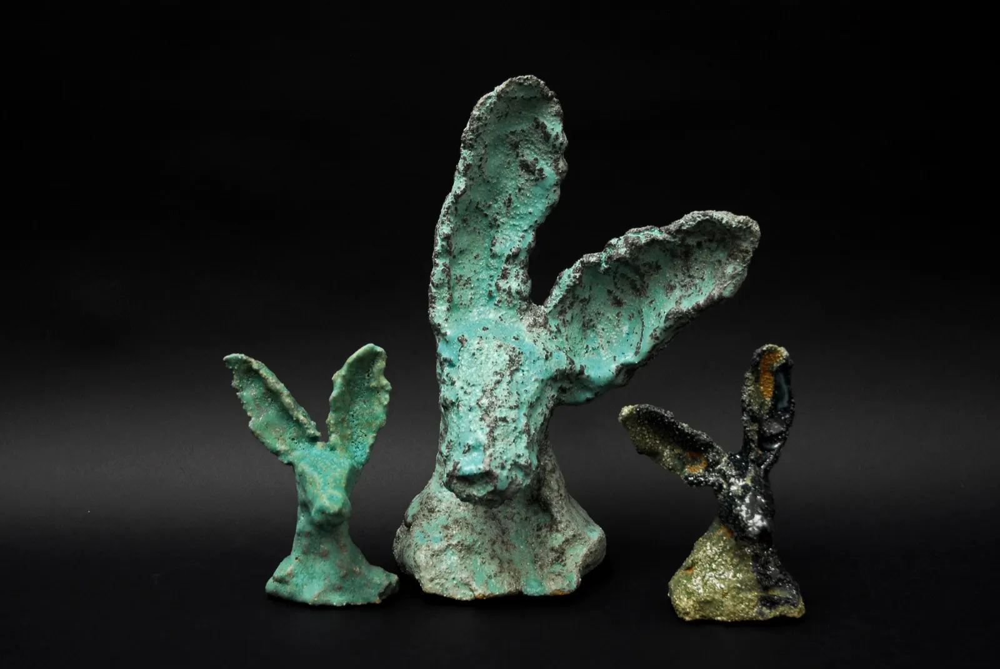
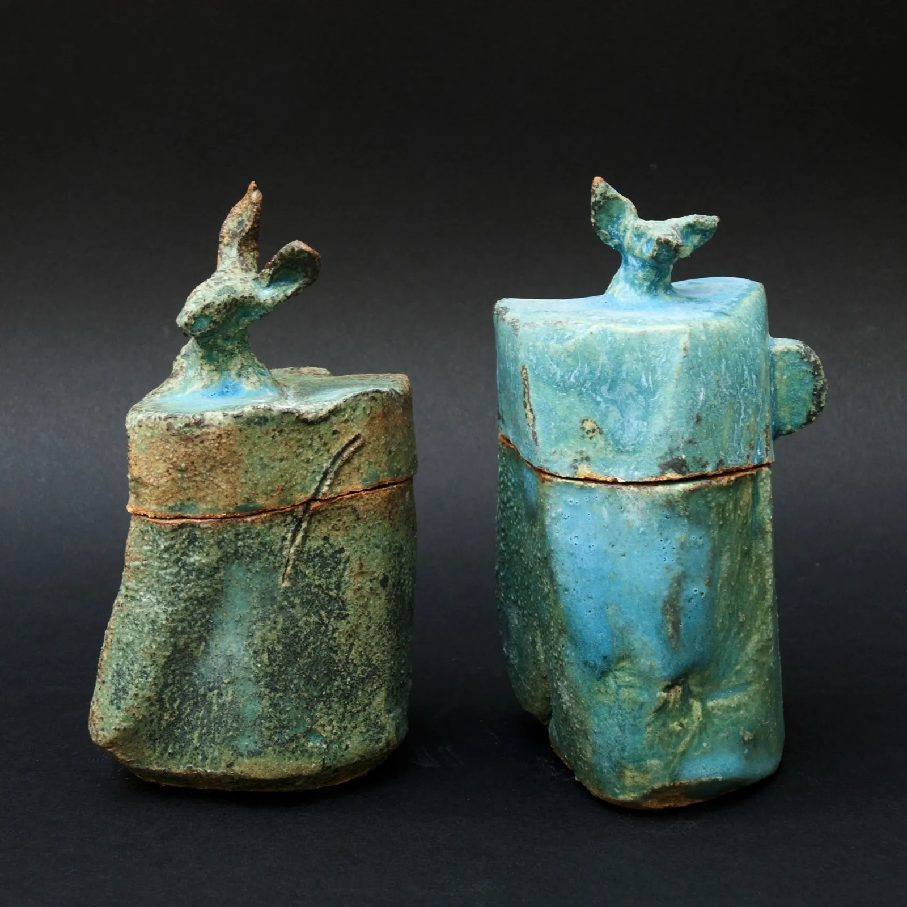
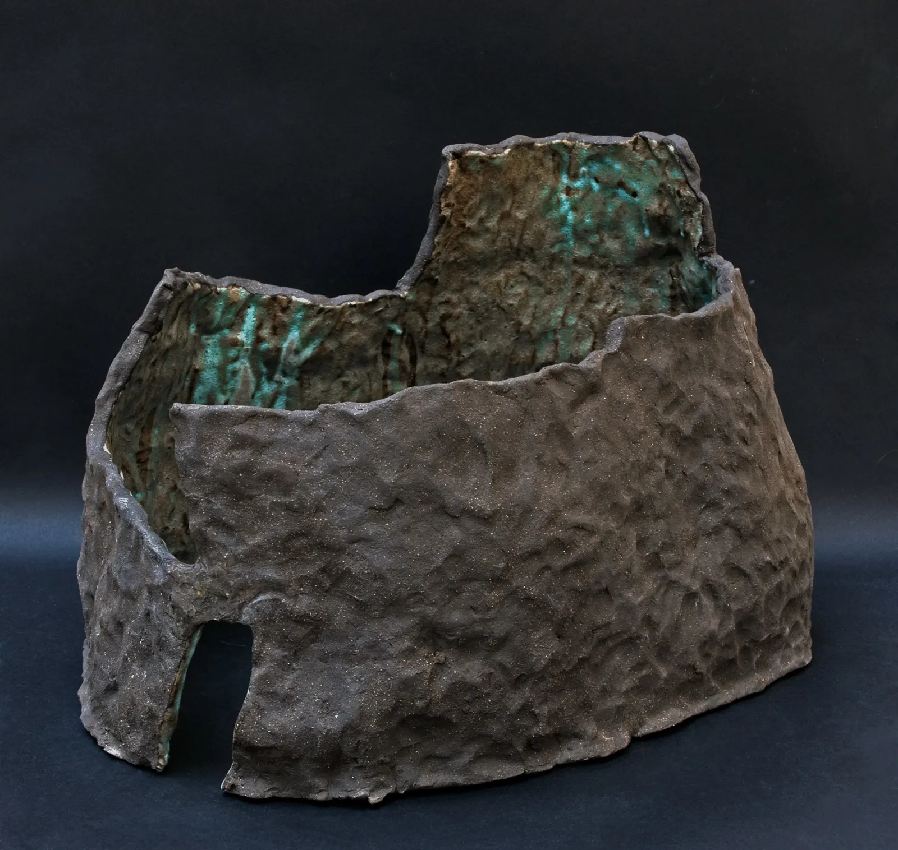
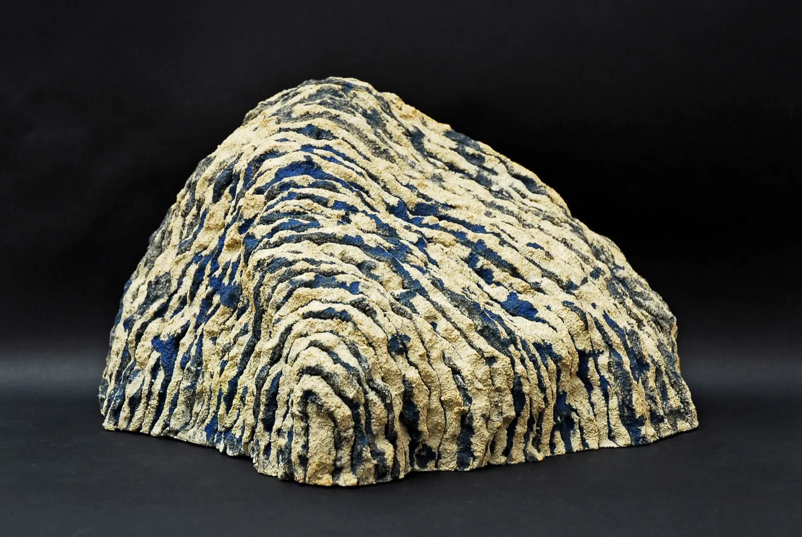
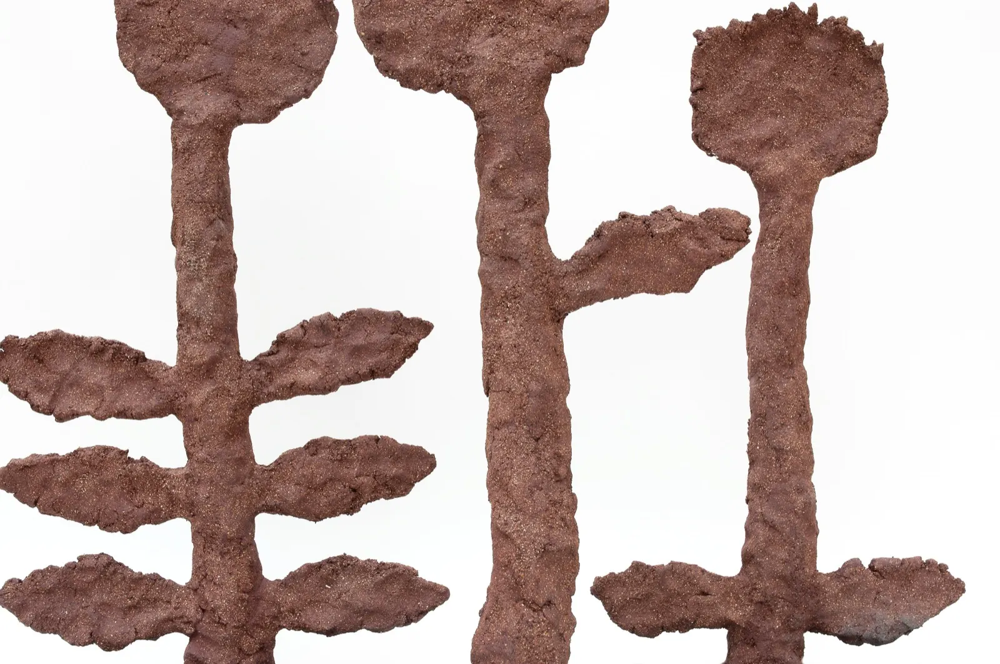
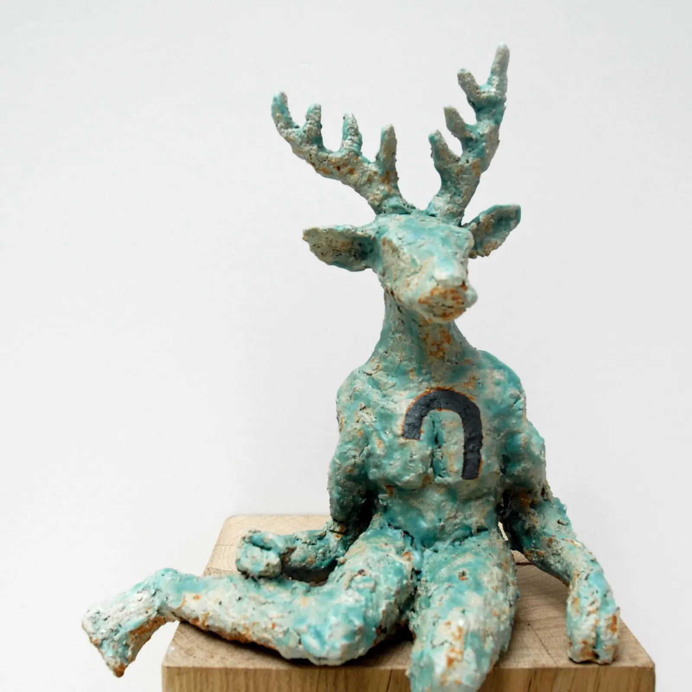
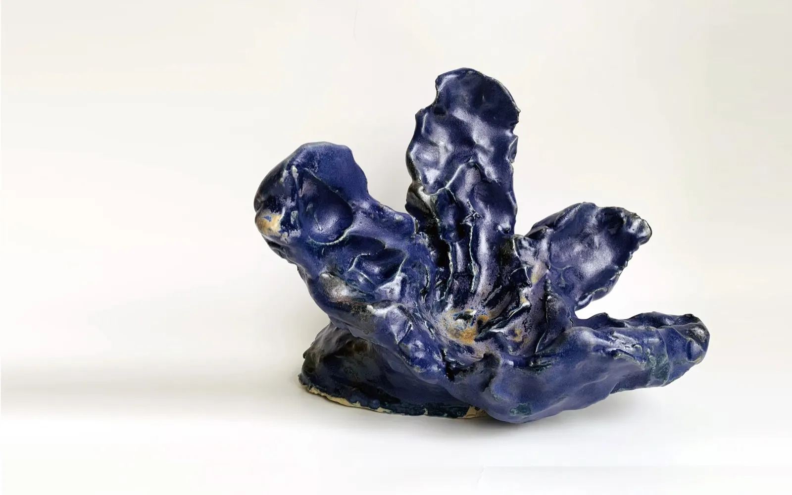

Marianne Abergel, sculptrice céramiste
Sculptures en grès, modelées à Ivry
Un travail qui avance par séries, des fleurs aux chimères. Et dans son grand atelier lumineux d'Ivry-sur-Seine, INU Céramique Studio, des cours de modelage le mercredi.

Women PowerGrès modelé
- GrèsModelé, chamotté, émaillé
- Galerie GrèsReprésentée à Paris, et par la Galerie Gaïa à Nantes
- 8 placesPar atelier de 3 h, le mercredi
- Depuis 2009Enseigne la céramique
Cours de modelage à INU Céramique Studio
INU se prononce inou : chien, en japonais.
Rencontre avec la terre ou perfectionnement : je vous propose de travailler le grès à l'aide de thèmes et de démonstrations techniques, pour créer des œuvres sculpturales ou utilitaires, à votre rythme et selon vos envies. Le tour est possible en autonomie.

Hors vacances scolaires. Adultes, ateliers de 3 h, 8 places.
- Le trimestre11 séances, matériel et cuissons compris550 €
Inscription par mail à contact@marianneabergel.com ou au 06 81 44 31 61.
Privatiser l'atelier
Stages thématiques pour un groupe à partir de 4 personnes, team building jusqu'à 20 personnes. Devis sur demande.
Des séries, comme des cercles concentriques
Lièvres, boîtes animal, paysages intérieurs : des grès émaillés où la couleur monte par strates.




« Le travail de Marianne Abergel avance par séries comme des cercles concentriques autour d'idées fortes. On y trouve maintenant une spiritualité terrienne qui s'élève par strates de couleur progressives, dans une intériorité vibrante. »
Il y a des fleurs sur le chemin
Sorties d'une terre granuleuse, chamottées à l'extrême, rugueuses à l'œil, leurs surfaces vibrantes paraissent toujours en mouvement. Fortes, et fragiles. Construites frontalement, leurs bras déployés dans l'espace comme un questionnement ou une invitation.
Fleurs #14, #13 et #15, grès, h 46, 47 et 42 cm.


Parcours
Expositions récentes
- 2023« Dans l'espace autour »Exposition personnelle, Galerie Grès, Paris
- 2023« Lapin lapin, entre et viens »Galerie terre d'Aligre, Paris
- 2022Biennale de ChantemerleChantemerle-les-Grignan
- 2022Saint-Sulpice CéramiquePlace Saint-Sulpice, Paris
Enseignement et attaches
- 2021Arts plastiques à l'ESAÉcole Spéciale d'Architecture, depuis 2021
- 2016Workshop céramique à l'EPSAAÉcole d'art graphique de la Ville de Paris, depuis 2016
- 2016Résidence au JaponUn lien fort avec le Japon
- 2009Céramique aux Ateliers d'Art d'Ivry-sur-SeineDepuis 2009

Venir à l'atelier
- Atelier
- INU Céramique Studio
31 rue Raspail, 94200 Ivry-sur-SeineMétro Mairie d'Ivry (ligne 7) ou RER C Ivry-sur-Seine - Téléphone
- 06 81 44 31 61
- Cours
- contact@marianneabergel.com
- Sculptures
- marianne.abergel@gmail.com
- L'atelier et les sculptures